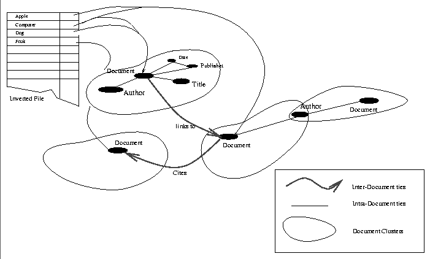
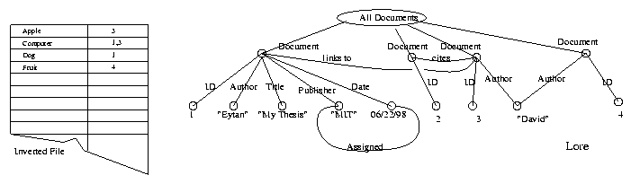

Although the straw model described above is a powerful one, querying it is an inefficient and difficult process. Queries to this type of network structure are a complex graph-isomorphism problem. Essentially, when a user makes a query they are trying to map a sub-graph they construct mentally to the full graph structure. For example looking for a document by Bob written in January about Apples is the graph consisting of a document node connected to an author node (with the content Bob), a date node (with the content January) and a term node (with the content apples).
However, we need not despair. It is now time to re-introduce the specialized information systems described previously, and begin to build efficiency into the system.
The first task is to combine the term nodes into an efficient data
structure. It is here that IR systems come to the rescue. We can now
take the term nodes and merge them into the inverted file hash table
which full-text IR systems are famous for. This conversion/indexing
process is illustrated in Figure  . In this figure we
see all the term nodes merged into an inverted file, with the
appropriate pointers from the file to the remaining document clusters.
. In this figure we
see all the term nodes merged into an inverted file, with the
appropriate pointers from the file to the remaining document clusters.

Figure: The Implemented Straw Model I
The second task involves the optimization of the remaining ties into
a queryable structure. The two types of information systems,
databases and hypertext systems, would seem to be the best answer.
However, we recall that Lore allows us to build both types of systems
into one. Figure shows this final transformation
between the abstract Straw structure to the concrete Lore
model described previously.
The next chapter discusses in detail the construction of
Straws, and Chapter details the methods for the
straw to database/hypertext converion. The indexing mechanisms built
into Haystack are described completely in Appendix .

Figure: The Implemented Straw Model II